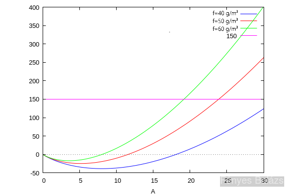
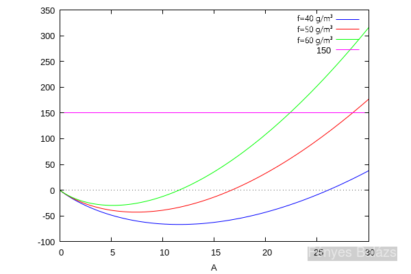
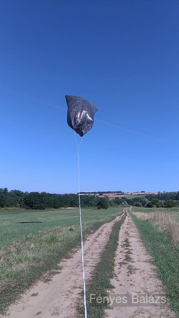
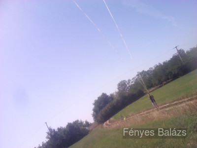
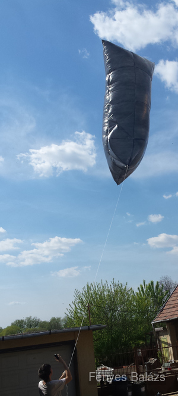

A feladat egy olyan hőlégballon készítése, amit a fekete színű fala miatt a napsugárzás fog felmelegíteni. A felmelegített lufiba zárt levegő sűrűsége lecsökken, és ha elég nagy a hőmérséklete, a saját súlyánál nagyobb is lehet a fellépő felhajtóerő.
Számítsuk ki, mekkora felhajtóerőre számíthatunk. Használjuk a gáztörvényt; a gáz tömege: $pV=nRT=\frac{m}{M}RT\rightarrow \frac{pVM}{RT}=m$. Legyen a környezet és a ballon hőmérséklete rendre $T_k$, $T_b$, ekkor a fajlagos felhajtóerő $f=\frac{pM}{R}(\frac{1}{T_k}-\frac{1}{T_b})$. Viszonylag nagy értékeket kapunk: $f(T_k=10°C,~T_b=20°C)\approx 40\frac{g}{m^3}$, $f(T_k=10°C,~T_b=25°C)\approx 60\frac{g}{m^3}$.
A felület súlya négyzetesen nő, a felhajtóerő viszont köbösen, ezért ha a felhasznált fólia túl kevés, akkor nem fog felemelkedni. A fólia felületi tömege $\sigma=[$fólia sűrűsége$]\cdot[$fólia vastagsága$]$, így a fólia tömege $A\sigma$. A felhajtóerő $A^{3/2}$-mal arányos, az ebből származó tömegkülönbség $A^{3/2}\mu f$, ahol a $\mu$ egy alaktól függő állandó. A legnagyobb felhajtóerő adott méretű fólia esetén gömbalakkal érhető el, ekkor kiszámítható, hogy $\mu\approx 0.094$, de hengeralakkal 1:3-as oldalarány esetén ennek 70-80%-át kapjuk, vagyis ez sem sokkal rosszabb.
A fóliának a lehető legvékonyabb fekete szemeteszsákot kerestem, úgy tűnik, hogy 15 µm-es a legvékonyabb, ilyen kapható pl. a Tesco-ban is nagyon olcsón. A fóliákat hosszában szétvágtam, és a keletkezett téglalapokat egymás mellé raktam, majd keskeny áttetsző ragasztószalaggal összeragasztva egy nagy téglalap alakú fóliát kaptam. Ennek két rövidebb szemközti oldalát összeragasztva egy hengert kaptam, majd az egyik végét is összeragasztottam. Ha a megmaradt nyílást is összeragasztjuk, akkor egy kis résen keresztül, pl. hajszárítóval vagy levélfúvóval felfújhatjuk, ekkor az alakja csipszes zacskóra fog hasonlítani.
Próbálkoztam még az alsó nyílás átmérőjét csökkenteni, még néhány zacskó hozzáadásával, így akár nekifutásból is feltölthető levegővel a léggömb, bár elég sokat kellett próbálkoznom. Ha a léggömbnek sikerül függőlegesen állnia, akkor mivel a melegebb levegő a felső részében fog összegyűlni, és alulról a nyíláson keresztül folyamatosan áramlik az utánpótlás, önmagát képes felfújni. Ebben az esetben viszont néhány percbe telik, amíg felemelkedik a léggömb.
A felemelt tömeg: $\Delta m=-A\sigma+A^{3/2}\mu f$, ahol $\sigma=960\frac{kg}{m^3}\cdot 15\mu m=14.4\frac{g}{m^2}$, $\mu\approx 0.094\cdot 90\%$, $f=40,~50,~60\frac{g}{m^3}$.

Látható, hogy kb. 10 m² fólia elegendő a felemelkedéshez, 25 m² pedig egy 150 grammos kamera felemeléséhez (pl. okostelefon + kötelek). De mivel a ragasztószalagnak is van tömege, ezért négyzetméterenként plusz 2-3 grammot hozzá kell adni a számolásokhoz. Így már 15 m² kell a felemelkedéshez, és 30 m² a kamera felemeléséhez. Ez nagyjából két csomagnyi szemeteszsákot jelent.

A reptetéssel érdemes reggel vagy délelőtt próbálkozni, mert ekkor még alacsony a léghőmérséklet. A léggömb csak napos idő esetén, és kizárólag szélcsendben használható.

A léggömbböt madzaggal fogtam, hogy nehogy elrepüljön, így kb. 30-40 méter magasságig engedtem fel, de ennél jóval tovább is tudna menni. Számításaim szerint akár ekkora léggömbbel néhány km-es magasság is elérhető, bár én ezzel a közeli reptér miatt nem próbálkoztam.

Egy másik, kicsit kisebb léggömb:
